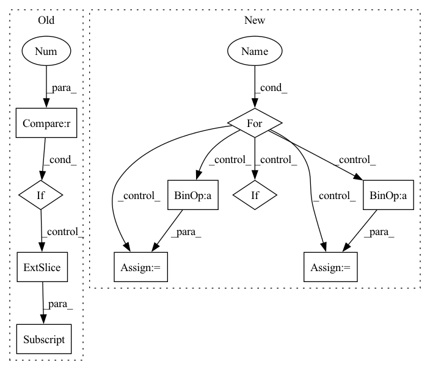

Pattern ID :4872
Before Change
// Remove padded values
// Want e.g. (..., 1000, 768) -> (..., 999, 768)
if pad_length > 0 :
hidden_states = hidden_states[..., 0:(-pad_length), :]
hidden_states = self.layer_norm(hidden_states)
if not return_dict:After Change
hidden_states = hidden_states + position_embeddings
hidden_states = self.dropout(hidden_states)
for layer in self.layers:
if output_hidden_states:
all_hidden_states = all_hidden_states + (hidden_states,)
layer_outputs = layer(hidden_states, attention_mask=attention_mask, output_attentions=output_attentions)
// add LayerDrop (see https://arxiv.org/abs/1909.11556 for description)
dropout_probability = torch.rand(tuple())
skip_the_layer = torch.tensor(self.training) and (dropout_probability < self.config.layerdrop)
if self.config.layerdrop > 0.0:
hidden_states = torch.where(skip_the_layer, hidden_states, layer_outputs[0])
else:
hidden_states = layer_outputs[0]
if skip_the_layer:
layer_outputs = (None, None)
if output_attentions:
all_self_attentions = all_self_attentions + (layer_outputs[1],)
hidden_states = self.layer_norm(hidden_states)
In pattern: SUPERPATTERN
Frequency: 4
Non-data size: 10
Instances Fragment ID: 17243206
Project Name: huggingface/optimum-graphcore
Commit Name: 075200de7b5b118681fc46af97985bb53ce9c146
Time: 2022-08-03
Author: gejinchen1996@gmail.com
File Name: optimum/graphcore/models/wav2vec2/ipu_layer_drop.py
M Class Name: IPUWav2Vec2EncoderStableLayerNorm
N Class Name: IPUWav2Vec2EncoderStableLayerNorm
M Method Name: forward(6)
N Method Name: forward(6)
M Parent Class: Wav2Vec2EncoderStableLayerNorm
N Parent Class: Wav2Vec2EncoderStableLayerNorm
M File Name: optimum/graphcore/models/wav2vec2/ipu_layer_drop.py
N File Name: optimum/graphcore/models/wav2vec2/ipu_layer_drop.py
M Start Line: 127
M End Line: 193
N Start Line: 101
N End Line: 144
Before Change
def shampoo(ctx: Context, grad: jnp.ndarray, step: jnp.ndarray) -> jnp.ndarray:
last_size = grad.shape[-1]
kernel_sizes = (ctx.dims.pointwise_kernel, ctx.dims.outer_bottleneck_kernel, ctx.dims.inner_bottleneck_kernel)
if grad.ndim != 3 or last_size not in kernel_sizes:
return _shampoo(ctx, grad, step)
return jnp.stack([_shampoo(ctx, grad[:, :, i] , step) for i in range(last_size)], axis=-1)
def clip_norm(val: jnp.ndarray, min_norm: float) -> jnp.ndarray:After Change
preconditioner = Preconditioner(grad, ctx.optimizer.block_size)
new_preconditioners = []
for i, old_stat in enumerate(preconditioner.statistics_from_grad(grad)):
new_stat = ema(ctx, old_stat, step, 1 - ctx.optimizer.shampoo_beta2, f"statistics_{i}", True,
jnp.eye(old_stat.shape[0], dtype=ctx.model.storage_dtype) * ctx.optimizer.epsilon)
prev_p = get_param(ctx, f"preconditioner_{i}", old_stat.shape, dtype=ctx.model.storage_dtype,
init_val=jnp.eye(old_stat.shape[0], dtype=ctx.model.storage_dtype))
if ctx.is_initializing:
continue
new_p, error = matrix_inverse_pth_root(new_stat, preconditioner.exponent_for_preconditioner(), Fragment ID: 17243200
Project Name: homebrewnlp/homebrewnlp-jax
Commit Name: bf951740b4e76e5a2144d26015890e30aed83bb5
Time: 2022-07-06
Author: 39779310+ClashLuke@users.noreply.github.com
File Name: src/optimizer.py
M Class Name: AnonimousClass
N Class Name: AnonimousClass
M Method Name: shampoo(3)
N Method Name: shampoo(3)
M Parent Class:
N Parent Class:
M File Name: src/optimizer.py
N File Name: src/optimizer.py
M Start Line: 93
M End Line: 97
N Start Line: 70
N End Line: 89
Before Change
// Remove padded values
// Want e.g. (..., 1000, 768) -> (..., 999, 768)
if pad_length > 0 :
hidden_states = hidden_states[..., 0:(-pad_length), :]
if not return_dict:
return tuple(v for v in [hidden_states, all_hidden_states, all_self_attentions] if v is not None)
After Change
hidden_states = self.layer_norm(hidden_states)
hidden_states = self.dropout(hidden_states)
for layer in self.layers:
if output_hidden_states:
all_hidden_states = all_hidden_states + (hidden_states,)
layer_outputs = layer(hidden_states, attention_mask=attention_mask, output_attentions=output_attentions)
// add LayerDrop (see https://arxiv.org/abs/1909.11556 for description)
dropout_probability = torch.rand(tuple())
skip_the_layer = torch.tensor(self.training) and (dropout_probability < self.config.layerdrop)
if self.config.layerdrop > 0.0:
hidden_states = torch.where(skip_the_layer, hidden_states, layer_outputs[0])
else:
hidden_states = layer_outputs[0]
if skip_the_layer:
layer_outputs = (None, None)
if output_attentions:
all_self_attentions = all_self_attentions + (layer_outputs[1],)
if output_hidden_states:
all_hidden_states = all_hidden_states + (hidden_states,) Fragment ID: 17243215
Project Name: huggingface/optimum-graphcore
Commit Name: 075200de7b5b118681fc46af97985bb53ce9c146
Time: 2022-08-03
Author: gejinchen1996@gmail.com
File Name: optimum/graphcore/models/wav2vec2/ipu_layer_drop.py
M Class Name: IPUWav2Vec2Encoder
N Class Name: IPUWav2Vec2Encoder
M Method Name: forward(6)
N Method Name: forward(6)
M Parent Class: Wav2Vec2Encoder
N Parent Class: Wav2Vec2Encoder
M File Name: optimum/graphcore/models/wav2vec2/ipu_layer_drop.py
N File Name: optimum/graphcore/models/wav2vec2/ipu_layer_drop.py
M Start Line: 41
M End Line: 108
N Start Line: 41
N End Line: 83